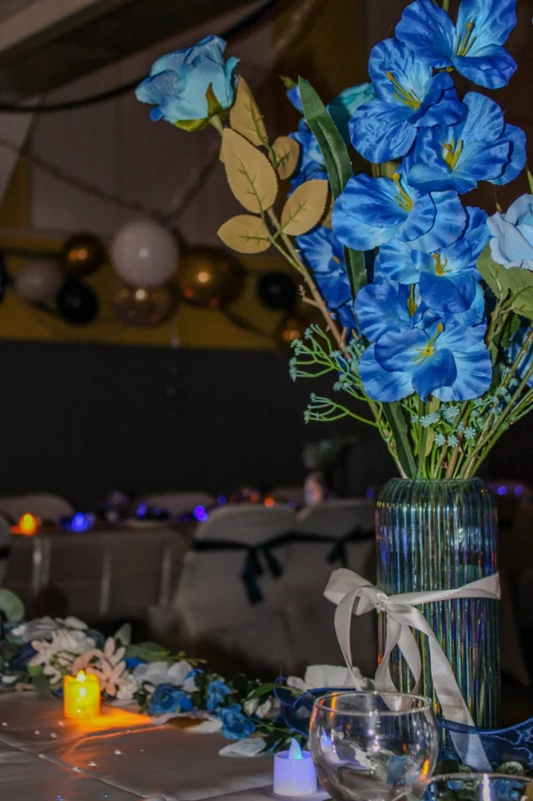
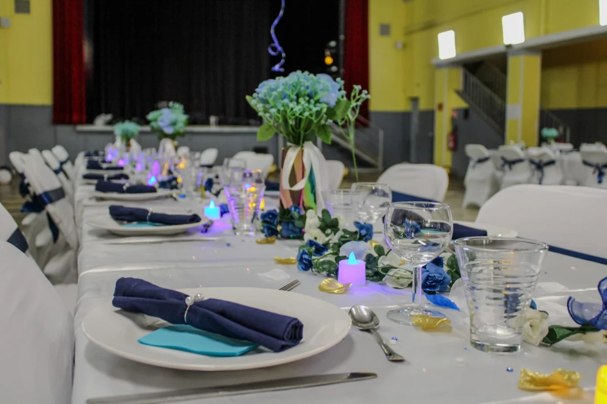
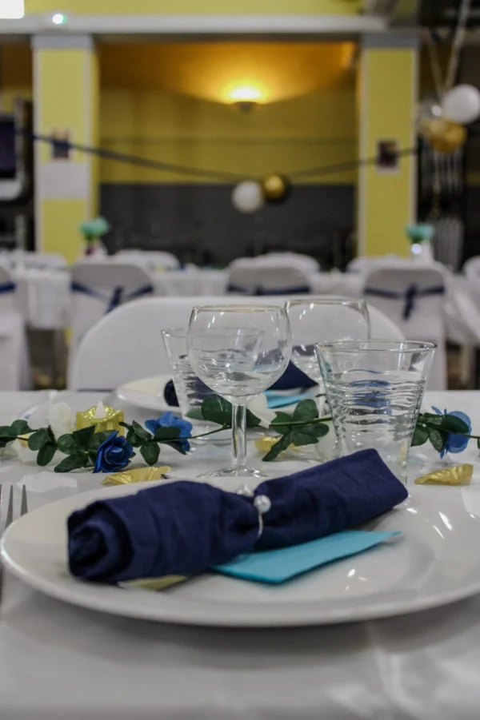
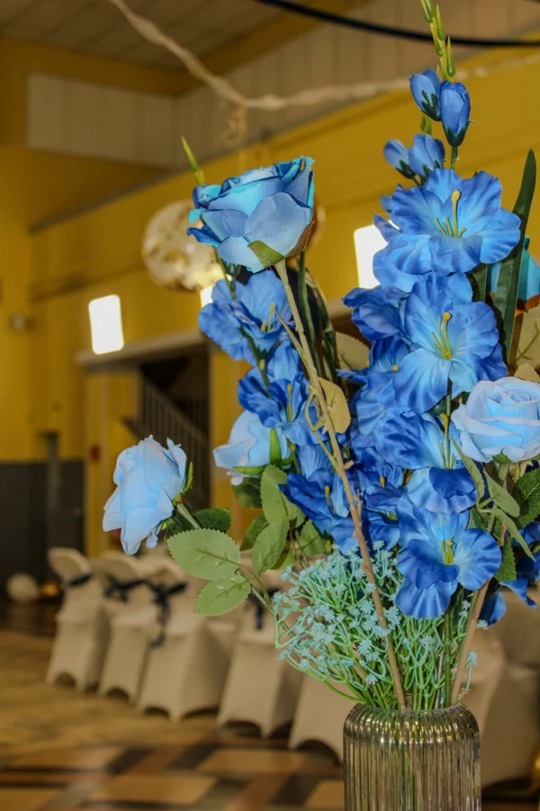
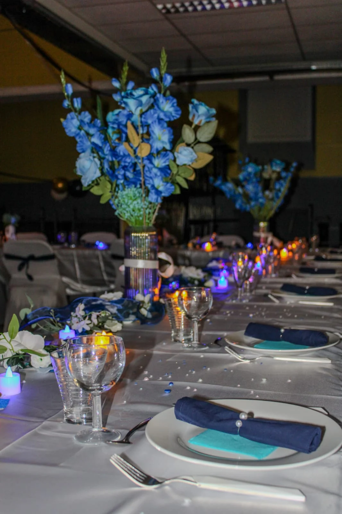
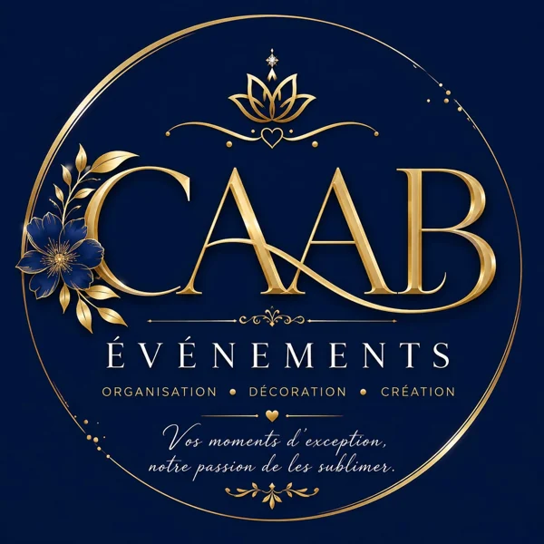

Habiller votre lieu
Créer une atmosphère avec les couleurs, les compositions et les éléments décoratifs. Penser le décor à l’échelle de votre réception.
Décoration de salleDécoration événementielle sur mesure en Ardèche.
Des lieux qui vous ressemblent, des détails qui se remarquent.


Du premier couvert aux lumières du soir, chaque élément participe au décor. Entrez dans cette réception imaginée autour du bleu, du blanc et du doré.
Une salle à transformer, une table à sublimer, une idée à faire exister. Nous imaginons et installons un ensemble qui vous ressemble.
Créer une atmosphère avec les couleurs, les compositions et les éléments décoratifs. Penser le décor à l’échelle de votre réception.
Décoration de salleAccorder le linge, les fleurs, les serviettes et les petits détails. Donner à chaque invité sa place dans votre univers.
Art de la table
Faire dialoguer vos envies et votre lieu. Composer un univers personnalisé, puis préparer et installer les éléments de votre décor.
Création sur mesure

Des couleurs, des matières,Chez CAAB ÉVÉNEMENTS, le décor commence par une conversation : ce que vous aimez, ce que vous imaginez, ce que vous souhaitez faire vivre à vos invités.
Nous réunissons les couleurs, les matières et les éléments qui donneront sa cohérence à votre événement. Une approche personnelle, de l’idée à l’installation.
« Vos moments d’exception,Racontez-nous votre idée
notre passion de les sublimer. »
Un fil conducteur simple pour imaginer ensemble une décoration qui trouve sa place dans votre événement.
Votre occasion, votre lieu, vos envies. Nous commençons par vous écouter.
Une ambiance et des éléments décoratifs en accord avec votre projet.
Les détails prennent forme autour du décor que nous avons défini ensemble.
Le décor rejoint votre lieu pour donner vie à l’atmosphère imaginée.
Un thème déjà en tête ou une page encore blanche : racontez-nous votre projet.
Votre lieu et les possibilités de déplacement seront précisés lors de l’échange.

Formulaire de démonstration. Vous pouvez tester le parcours : aucune demande ni donnée personnelle n’est envoyée ou enregistrée.